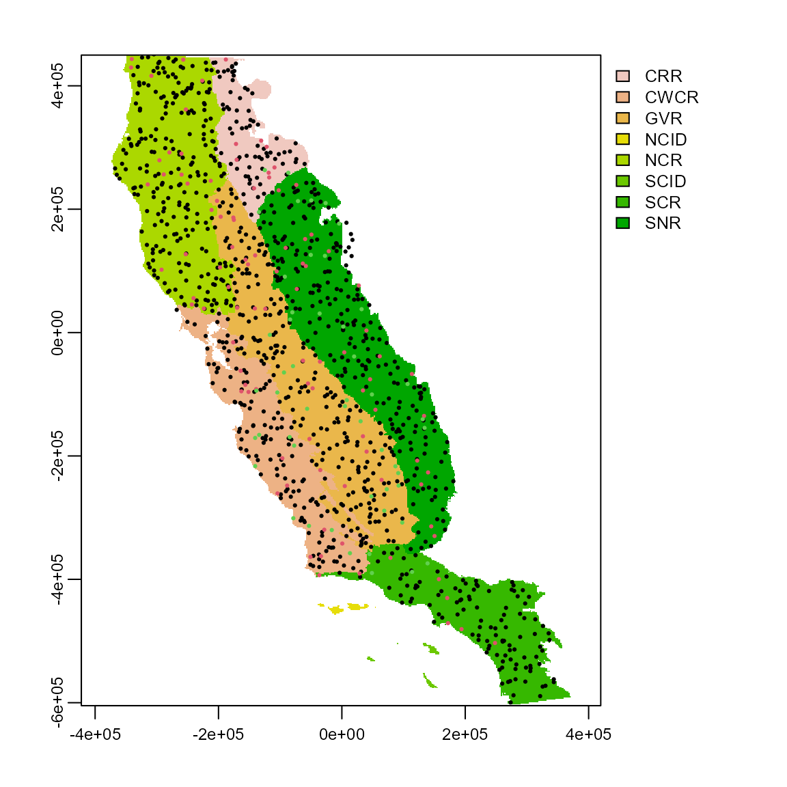

flexsdm: Overview of Pre-modeling functions
01_pre_modeling.RmdIntroduction
Species distribution modeling (SDM) has become a standard tool in many research areas, including ecology, conservation biology, biogeography, paleobiogeography, and epidemiology. SDM is an active area of theoretical and methodological research. The flexsdm package provides users the ability to manipulate and parameterize models in a variety of ways that meet their unique research needs.
This flexibility enables users to define their own complete or partial modeling procedure specific for their modeling situation (e.g., number of variables, number of records, different algorithms and ensemble methods, algorithms tuning, etc.).
In this vignette, users will learn about the first set of functions in the flexsdm package that fall under the “pre-modeling” umbrella (see below for full list).
pre-modeling functions
calib_area() Delimit calibration area for constructing species distribution models
correct_colinvar() Collinearity reduction for predictors
env_outliers() Integration of outliers detection methods in environmental space
part_random() Data partitioning for training and testing models
part_sblock() Spatial block cross-validation
part_sband() Spatial band cross-validation
part_senv() Environmental cross-validation
plot_res() Plot different resolutions to be used in part_sblock
get_block() Transform a spatial partition layer to the same spatial properties as the environmental variables
sample_background() Sample background points
sample_pseudoabs() Sample pseudo-absence
sdm_directory() Create directories for saving the outputs of flexsdm
sdm_extract() Extract environmental data based on x and y coordinates
occfilt_env() Perform environmental filtering on species occurrences
occfilt_geo() Perform geographical filtering on species occurrences
Installation
First, install the flexsdm package. You can install the released version of flexsdm from github with:
#devtools::install_github('sjevelazco/flexsdm')
library(flexsdm)
library(dplyr)
#>
#> Attaching package: 'dplyr'
#> The following objects are masked from 'package:stats':
#>
#> filter, lag
#> The following objects are masked from 'package:base':
#>
#> intersect, setdiff, setequal, union
library(terra)
#> terra version 1.3.4
#>
#> Attaching package: 'terra'
#> The following object is masked from 'package:dplyr':
#>
#> src
#> The following object is masked from 'package:knitr':
#>
#> spinProject Directory Setup
When building SDM’s, organizing folders (directories) for a project will save time and confusion. The project directory is the main project folder where you will store all of the relevant data and results for your current project. Now, let’s create a project directory where your initial data and the model results will be stored. The function sdm_directory() can do this for you, based on the types of model algorithms you want to use and/or the types of projections you would like to make. First decide where on your computer you would like to store the inputs and outputs of the project (this will be the main directory) and then use dir.create() to create that main directory. Next, specify whether or not you want to include folders for projections, calibration areas, algorithms, ensembles, and thresholds.
my_project <- file.path(file.path(tempdir(), 'flex_sdm_project'))
dir.create(my_project)
project_directory <- sdm_directory(main_dir = my_project,
projections = NULL,
calibration_area = TRUE,
algorithm = c("fit_max", "tune_raf"),
ensemble = c("mean"),
threshold = TRUE,
return_vector = TRUE)Data, species occurrence and background data
In this tutorial, we will be using species occurrences that are available through the flexsdm package. The “spp” example dataset includes pr_ab column (presence = 1, and absence = 0), and location columns (x, y). You can load the “spp” data into your local R environment by using the code below:
data("spp")
spp
#> # A tibble: 1,150 x 4
#> species x y pr_ab
#> <chr> <dbl> <dbl> <dbl>
#> 1 sp1 -5541. -145138. 0
#> 2 sp1 -51981. 16322. 0
#> 3 sp1 -269871. 69512. 1
#> 4 sp1 -96261. -32008. 0
#> 5 sp1 269589. -566338. 0
#> 6 sp1 29829. -328468. 0
#> 7 sp1 -152691. 393782. 0
#> 8 sp1 -195081. 253652. 0
#> 9 sp1 -951. -277978. 0
#> 10 sp1 145929. -271498. 0
#> # ... with 1,140 more rowsGeographic region
Our species occurrences are located in the California Floristic Province (far western USA). The “regions” dataset can be used to visualize the study area in geographic space.
regions <- system.file("external/regions.tif", package = "flexsdm")
regions <- terra::rast(regions)How are the points distributed across our study area?

Calibration area
An important decision in SDM is how to delimit your model’s calibration area, or the geographic space you will use to train your model(s). Choice of calibration area affects other modeling steps, including sampling pseudo-absence and background points, performance metrics, and the geographic patterns of habitat suitability. You would not want to train an SDM using the entire extent of the United States if you are interested in the geographic distribution and environmental controls of a rare plant species that is only found on mountaintops in the Sierra Nevada, California!
Let’s use presence locations for one species in this exercise.
single_spp <-
spp %>%
dplyr::filter(species == "sp1") %>%
dplyr::filter(pr_ab == 1) %>%
dplyr::select(-pr_ab)The calib_area() function offers three methods for defining a calibration area: buffer, mcp, bmcp, and mask. We will briefly go over each.
1. Buffer
Here the calibration area is defined using buffers around presence points. User’s can specify the distance around points using the “width” argument.
ca_1 <- calib_area(
data = single_spp,
x = "x",
y = "y",
method = c("buffer", width = 40000),
)
#> Loading required namespace: rgeos
plot(regions, main = "Buffer method")
plot(ca_1, add = TRUE)
points(single_spp[, 2:3], pch = 19, cex = 0.5)
2. Minimum convex polygon
The minimum convex polygon (mcp) method produces a much simpler shape.
ca_2 <- calib_area(
data = single_spp,
x = "x",
y = "y",
method = c("mcp"),
)
plot(regions, main = "Minimum convex polygon method")
plot(ca_2, add = TRUE)
points(single_spp[, 2:3], pch = 19, cex = 0.5)
3. Buffered minimum convex polygon
You can also create a buffer around the minimum convex polygon.
ca_3 <- calib_area(
data = single_spp,
x = "x",
y = "y",
method = c("bmcp", width = 40000),
)
plot(regions, main = "Buffered minimum convex polygon")
plot(ca_3, add = TRUE)
points(single_spp[, 2:3], pch = 19, cex = 0.5)
4. Mask
The mask method allows polygons to be selected that intersect with your species locations to delineate the calibration area. This is useful if you expect species distributions to be associated with ecologically significant (and mapped) ecoregions, or are interested in distributions within political boundaries. We will use a random set of polygons named “clusters” to illustrate the mask method. The original polygons are on the left and the polygons that contain points (our “mask” calibration area) are on the right.
clusters <- system.file("external/clusters.shp", package = "flexsdm")
clusters <- terra::vect(clusters)
ca_4 <- calib_area(
data = single_spp,
x = "x",
y = "y",
method = c("mask", clusters, "clusters"),
)
par(mfrow=c(1,2))
plot(clusters, main = "Original polygons")
plot(ca_4, main = "Polygons with points (mask)")
points(single_spp[, 2:3], pch = 19, cex = 0.5)
Reducing collinearity among the predictors
Predictor collinearity is a common issue for SDMs, which can lead to model overfitting and inaccurate tests of significance for predictors (De Marco & Nóbrega, 2018; Dormann et al., 2013).
Environmental predictors
Here we will use four climatic variables available in the flexsdm package: actual evapotranspiration (CFP_1), climatic water deficit (CFP_2), maximum temperature of the warmest month (CFP_3), and minimum temperature of the coldest month (CFP_4).
somevar <- system.file("external/somevar.tif", package = "flexsdm")
somevar <- terra::rast(somevar)
names(somevar) <- c('aet', 'cwd', 'tmx', 'tmn')
plot(somevar)
The relationship between different environmental variables can be visualized with the pairs() function from the terra package. Several of our variables are highly correlated (.89 for predictors tmx and tmn).
terra::pairs(somevar)
So how can we correct for or reduce this collinearity? The function correct_colinvar() has four methods to deal with collinearity: pearson, vif, pca, and fa. Each method returns 1) a raster object (SpatRaster) with the selected predictors and 2) other useful outputs relevant to each method. Let’s look at each method:
1. Pearson correlation
This method eliminates predictors with a Pearson correlation index higher than a determined threshold. The default threshold is 0.7, but users can specify a given threshold (x) with method = c(‘pearson’, th = ‘x’). Here, we can see that the “pearson” method retains two predictors and removes two. The function also returns a list of removed variables and a correlation matrix of all input predictors.
pearson_var <- correct_colinvar(somevar, method = c("pearson", th="0.7"))
pearson_var$env_layer
#> class : SpatRaster
#> dimensions : 558, 394, 2 (nrow, ncol, nlyr)
#> resolution : 1890, 1890 (x, y)
#> extent : -373685.8, 370974.2, -604813.3, 449806.7 (xmin, xmax, ymin, ymax)
#> coord. ref. : +proj=aea +lat_0=0 +lon_0=-120 +lat_1=34 +lat_2=40.5 +x_0=0 +y_0=-4000000 +datum=NAD83 +units=m +no_defs
#> source : somevar.tif
#> names : tmx, cwd
#> min values : 22.44685, -9.39489
#> max values : 614.69125, 14.20047
pearson_var$removed_variables
#> [1] "aet" "tmn"
pearson_var$correlation_table
#> # A tibble: 4 x 5
#> variable aet cwd tmx tmn
#> <chr> <dbl> <dbl> <dbl> <dbl>
#> 1 aet 0 0.769 0.792 0.785
#> 2 cwd 0.769 0 0.417 0.588
#> 3 tmx 0.792 0.417 0 0.732
#> 4 tmn 0.785 0.588 0.732 02. Variance inflation factor
This method removes the predictors with a variance inflation factor higher than the chosen threshold. Again, users can specify a threshold (the default is 10). This method retains the predictors aet, tmx, and tmn and removes cwd. The output for this method matches what is produced by the pearson method: 1) environmental layer of retained variables, 2) a list of removed variables, and 3) a correlation matrix of all variables.
vif_var <- correct_colinvar(somevar, method = c("vif", th = "10"))
vif_var$env_layer
#> class : SpatRaster
#> dimensions : 558, 394, 4 (nrow, ncol, nlyr)
#> resolution : 1890, 1890 (x, y)
#> extent : -373685.8, 370974.2, -604813.3, 449806.7 (xmin, xmax, ymin, ymax)
#> coord. ref. : +proj=aea +lat_0=0 +lon_0=-120 +lat_1=34 +lat_2=40.5 +x_0=0 +y_0=-4000000 +datum=NAD83 +units=m +no_defs
#> source : somevar.tif
#> names : aet, cwd, tmx, tmn
#> min values : 0.0000000, -9.3948898, 22.4468510, 0.2591429
#> max values : 1357.86469, 14.20047, 614.69125, 64.37476
vif_var$removed_variables
#> NULL
vif_var$correlation_table
#> # A tibble: 4 x 5
#> variable aet cwd tmx tmn
#> <chr> <dbl> <dbl> <dbl> <dbl>
#> 1 aet 0 0.769 -0.792 -0.785
#> 2 cwd 0.769 0 -0.417 -0.588
#> 3 tmx -0.792 -0.417 0 0.732
#> 4 tmn -0.785 -0.588 0.732 03. Principal component analysis
Finally, the “pca” method performs a principal components analysis on the predictors and returns the axis that accounts for 95% of the total variance in the system. This method returns 1) a SpatRaster object with selected environmental variables, 2) a matrix with the coefficients of principal components for predictors, and 3) a tibble with the cumulative variance explained in selected principal components.
pca_var <- correct_colinvar(somevar, method = c("pca"))
pca_var$env_layer
#> class : SpatRaster
#> dimensions : 558, 394, 3 (nrow, ncol, nlyr)
#> resolution : 1890, 1890 (x, y)
#> extent : -373685.8, 370974.2, -604813.3, 449806.7 (xmin, xmax, ymin, ymax)
#> coord. ref. : +proj=aea +lat_0=0 +lon_0=-120 +lat_1=34 +lat_2=40.5 +x_0=0 +y_0=-4000000 +datum=NAD83 +units=m +no_defs
#> source : memory
#> names : PC1, PC2, PC3
#> min values : -8.453273, -4.260147, -1.525085
#> max values : 2.827164, 3.337545, 4.342864
pca_var$coefficients
#> # A tibble: 4 x 5
#> variable PC1 PC2 PC3 PC4
#> <chr> <dbl> <dbl> <dbl> <dbl>
#> 1 aet 0.550 -0.0722 0.296 -0.778
#> 2 cwd 0.450 -0.777 0.103 0.429
#> 3 tmx -0.485 -0.594 -0.450 -0.459
#> 4 tmn -0.511 -0.198 0.836 -0.0241
pca_var$cumulative_variance
#> # A tibble: 4 x 2
#> PC cvar
#> <int> <dbl>
#> 1 1 0.764
#> 2 2 0.915
#> 3 3 0.979
#> 4 4 14. Factorial analysis
Selecting the “fa” method performs a factorial analysis to reduce dimensionality and selects the predictor(s) with the highest correlation to each axis. The outputs for this method are similar to those produced by the ‘pca’ method. NOT WORKING
#fa_var <- correct_colinvar(somevar, method = c("fa"))
#fa_var$env_layer
#fa$coefficient
#fa_var$cumulative_varianceData filtering
Sample bias in species occurrence data is a common issue in ecological studies and filtering the occurrence data can reduce some of this bias. flexsdm provides two functions for different types of filtering, based on geographical or environmental “thinning”, randomly removing points where they are dense (oversampling) in geographical or environmental space. This can improve model performance and reduce redundancy in your data.
Environmental filtering with 5 bins
The function occfilt_env(), which performs environmental filtering on species occurrence data. This method basically reduces environmental redundancy in your data and is based on methods outlined in Valera et al. (2014). However, this function is unique to flexsdm, as it is able to use any number of environmental dimensions and does not perform a PCA before filtering. In this example, we will use our original environmental data (somevar) and occurrence data for a single species (spp1). For filtering occurrences, it is important that each row in the species data has its own unique code (example: idd). This function also gives the user the option of specifying the number classes used to split each environmental condition. Here we will explore the results using 5, 8, and 12 bins. Increasing the number of bins increases the number of occurrence points retained.
spp1 <- spp %>% dplyr::filter(species == "sp1", pr_ab == 1)
spp1$idd <- 1:nrow(spp1)
filt_env5 <- occfilt_env(
data = spp1,
x = "x",
y = "y",
id = "idd",
env_layer = somevar,
nbins = 5,
cores = 1
)
#> Extracting values from raster ...
#> 12 records were removed because they have NAs for some variables
#> Number of classes in the environmental space: 1296
#> Number of unfiltered records: 238
#> Number of filtered records: 61
filt_env8 <- occfilt_env(
data = spp1,
x = "x",
y = "y",
id = "idd",
env_layer = somevar,
nbins = 8,
cores = 1
)
#> Extracting values from raster ...
#> 12 records were removed because they have NAs for some variables
#> Number of classes in the environmental space: 6561
#> Number of unfiltered records: 238
#> Number of filtered records: 119
filt_env12 <- occfilt_env(
data = spp1,
x = "x",
y = "y",
id = "idd",
env_layer = somevar,
nbins = 12,
cores = 1
)
#> Extracting values from raster ...
#> 12 records were removed because they have NAs for some variables
#> Number of classes in the environmental space: 28561
#> Number of unfiltered records: 238
#> Number of filtered records: 175
par(mfrow=c(2,2))
somevar[[1]] %>% plot(main = "Original occurrence data")
points(spp1 %>% select(x, y))
somevar[[1]] %>% plot(main = "Filtering with 5 bins")
points(filt_env5 %>% select(x, y))
somevar[[1]] %>% plot(main = "Filtering with 8 bins")
points(filt_env8 %>% select(x, y))
somevar[[1]] %>% plot(main = "Filtering with 12 bins")
points(filt_env12 %>% select(x, y))
Next, we will look at occfilt_geo(), which has three alternatives to determine the distance threshold between a pair of points: “moran” determines the threshold as the distance between points that minimizes the spatial autocorrelation in occurrence data; “cellsize” filters occurrences based on the resolution of the predictors; finally, “determined” allows users to manually determine the distance threshold. ### METHOD NOT AVAILABLE YET
# UPDATEData partitioning
Data partitioning, or splitting data into testing and training groups, is a key step in building SDMs. flexsdm offers multiple options for data partitioning, including part_random(), part_sband(), part_sblock(), and part_senv(). Let’s explore each of these methods.
1. Conventional data partitioning methods (part_random)
The part_random() function provides users the ability to divide species occurrence data based on conventional partition methods including k-folds, repeated k-folds, leave-one-out cross-validation, and bootstrap partitioning.
Here, we use the “kfold” method with 10 folds to divide our data. This results in 10 folds of occurrence data with 25 observations in each fold.
sp_part1 <- part_random(
data = spp1,
pr_ab = "pr_ab",
method = c(method = "kfold", folds = 10)
)
sp_part1$.part %>% table()
#> .
#> 1 2 3 4 5 6 7 8 9 10
#> 25 25 25 25 25 25 25 25 25 252. Spatial band cross-validation (part_sband) ERROR
Both part_sband() and part_sblock() partition data based on their position in geographic space. Geographically structured data partitioning methods are especially useful if users want to evaluate model transferability to different regions or time periods. The function part_sband tests for different numbers of spatial partitions using latitudinal or longitudinal bands and selects the best number of bands for a given presence, presence-absence, or presence-background dataset. This procedure is based on spatial autocorrelation, environmental similarity, and the number of presence/absence records in each band partition. The function’s output includes 1) a tibble with presence/absence locations and the assigned partition number, 2) a tibble with information about the best partition, and 3) a SpatRaster showing the selected grid.
*throwing an error: It was not possible to find a good partition. Try to change values in ‘n_part’, or in ‘min_band’, or ‘max_band’"
sp_part2 <- part_sband(
env_layer = somevar,
data = spp1,
x = "x",
y = "y",
pr_ab = "pr_ab",
type = "lat", # specify bands across different degrees of longitude 'lon' or latitude 'lat'.
min_bands = 2, # minimum number of spatial bands to be tested
max_bands = 20, # maximum number of spatial bands to be tested
n_part = 2,
prop = 0.5
)
plot(sp_part2$grid, col = gray.colors(20))
points(sp_part2$part[c("x", "y")],
col = rainbow(8)[sp_part2$part$.part],
cex = 0.9,
pch = c(1, 19)[sp_part2$part$pr_ab + 1]
)3. Spatial block cross-validation (part_sblock)
The part_sblock() function is very similar to part_sband() but instead of bands it explores spatial blocks with different raster cells sizes and returns the one that is best suited for the input dataset. Here, we can see the data divided into different “blocks” for training and testing.
sp_part3 <- part_sblock(
env_layer = somevar,
data = spp1,
x = "x",
y = "y",
pr_ab = "pr_ab",
min_res_mult = 10, # Minimum value used for multiplying raster resolution and define the finest resolution to be tested
max_res_mult = 500, # Maximum value used for multiplying raster resolution and define the coarsest resolution to be tested
num_grids = 30, # Number of grid to be tested between min_res_mult X (raster resolution) and max_res_mult X (raster resolution)
n_part = 2, # Number of partitions
prop = 0.5 # Proportion of points used for testing autocorrelation between groupds (0-1)
)
#> 12 rows were excluded from database because NAs were found
#> The following grid cell sizes will be tested:
#> 18900 | 50834.48 | 82768.97 | 114703.45 | 146637.93 | 178572.41 | 210506.9 | 242441.38 | 274375.86 | 306310.34 | 338244.83 | 370179.31 | 402113.79 | 434048.28 | 465982.76 | 497917.24 | 529851.72 | 561786.21 | 593720.69 | 625655.17 | 657589.66 | 689524.14 | 721458.62 | 753393.1 | 785327.59 | 817262.07 | 849196.55 | 881131.03 | 913065.52 | 945000
#> Creating basic raster mask...
#> Searching for the optimal grid size...
plot(sp_part3$grid)
points(sp_part3$part[c("x", "y")],
col = c("blue", "red")[sp_part3$part$.part],
cex = 0.5,
pch = 19
)
However, we notice that the grid partition produced by part_sblock has a different resolution than the original environmental variables. If you want a map layer with the same properties (i.e. resolution, extent, NAs) as your original environmental variables, apply the get_block() function to the grid resulting from part_sblock(). This layer can be really useful for generating pseudo-absence or background sample points, which we will explore in the next section.
terra::res(sp_part3$grid)
#> [1] 849196.6 849196.6
terra::res(somevar)
#> [1] 1890 1890
grid_env <- get_block(env_layer = somevar, best_grid = sp_part3$grid)
plot(grid_env) # this is a block layer with the same layer
# properties as environmental variables.
points(sp_part3$part[c("x", "y")],
col = c("blue", "red")[sp_part3$part$.part],
cex = 0.5,
pch = 19
)
4. Environmental and spatial cross-validation (part_senv)
The final partitioning function in flexsdm is part_senv(), which explores different numbers of environmental partitions based on the K-means clustering algorithm and returns the one best-suited for a particular dataset, considering spatial autocorrelation, environmental similarity, and the number of presence and/or absence records in each partition. The map below shows partitioning based on these environmental and spatial factors.
sp_part4 <- part_senv(
env_layer = somevar,
data = spp1,
x = "x",
y = "y",
pr_ab = "pr_ab",
min_n_groups = 2, # Minimum number of groups to be tested
max_n_groups = 10, # Maximum number of groups to be tested
prop = 0.5 # Proportion of points used for testing autocorrelation between groups (0-1)
)
#> 12 rows were excluded from database because NAs were found
#> The following grid cell sizes will be tested:
#> 2 | 3 | 4 | 5 | 6 | 7 | 8 | 9 | 10
#> Searching best partition...
plot(regions, col = gray.colors(9))
points(sp_part4$part[c("x", "y")],
col = hcl.colors(length(unique(sp_part4$part)))[sp_part4$part$.part],
cex = 1,
pch = 19
)
Background and pseudo-absence sampling
Presence-only occurrence data are quite common in ecology and researchers may not have adequate “absence” data for their species of interest. Sometimes in building species distribution models, we need to be able to generate background or pseudo-absence points for the modeling goals. The flexsdm package allows users to do this using sample_background() and sample_pseudoabs().
1. Sample background
The function sample_background() allows slection of background sample points based on different geographic restrictions and sampling methods. Here, we sample a set of background points based on our earlier spatial block partitioning using the “random” method. Using lapply() in this case ensures that we generate background points in each of our spatial blocks (n = 2). We are also specifying that we want ten times the amount of background points as our original occurrences and that our calibration area will be the buffer area around presence points (see section on “Calibration area”).
p_data <-
sp_part3$part # presence data from spatial block partition example
set.seed(10)
bg <- lapply(1:2, function(x)
sample_background(
data = p_data,
x = "x",
y = "y",
n = sum(p_data == x) * 10,
# number of background points to be sampled
method = "random",
rlayer = grid_env,
maskval = x,
calibarea = ca_1 # A SpatVector which delimit the calibration area used for a given species
)) %>%
bind_rows() %>%
mutate(pr_ab = 0)
par(mfrow=c(2,1))
plot(grid_env, main = "Presence points")
plot(ca_1, add= TRUE)
points(p_data, cex = .7, pch = 19)
plot(grid_env, main = "Background points")
plot(ca_1, add = TRUE)
points(bg, cex = .1, pch = 19)
2. Sample pseudo-absences
Similarly, the function sample_pseudoabs allows random pseudo-absence sampling or based on environmental and/or geographical constraints. For example, specifying method = “env_const” selects pseudo-absences that are environmentally constrained to regions with lower suitability values as predicted by a Bioclim model. Additionally, this function allows users to specify a calibration area from which to generate pseudo-absence points. Here, we will use the buffer area around presence points (ca_1) to show what this might look like. As you can see, we have generated pseudo-absence points that are in the general vicinity of our presence points, but are concentrated in areas that have lower environmental suitability. The specific method chosen for sampling background and/or pseudo-absence points will vary depending on research goals.
set.seed(10)
psa <- lapply(1:2, function(x)
sample_pseudoabs(
data = p_data,
x = "x",
y = "y",
n = sum(p_data == x),
# number of pseudo-absence points to be sampled
method= c('env_const', env = somevar),
rlayer = grid_env,
maskval = x,
calibarea = ca_1
)) %>%
bind_rows() %>%
mutate(pr_ab = 0)
par(mfrow=c(2,1))
plot(grid_env, main = "Presence points")
plot(ca_1, add= TRUE)
points(p_data, cex = .7, pch = 19)
plot(grid_env, main = "Pseudo-absence points")
plot(ca_1, add= TRUE)
points(psa, cex = .7, pch = 19)
Extracting environmental values
Finally, before modeling species geographic distributions, we must extract environmental data at the presences + absences/pseudo-absences/background point locations. The function sdm_extract() extracts environmental data values based on x and y coordinates and returns a tibble with the original data + additional columns for the extracted environmental variables at those locations. Let’s do this for our original presence points (spp1) and our background locations (bg).
all_points <- bind_rows(spp1 %>% dplyr::select(-idd), bg)
ex_spp <- sdm_extract(
data = all_points,
x = "x",
y = "y",
env_layer = somevar, # Raster with environmental variables
variables = NULL, # Vector with the variable names of predictor variables Usage variables. = c("aet", "cwd", "tmin"). If no variable is specified, function will return data for all layers.
filter_na = TRUE)
ex_spp#=========#=========#=========#=========#=========#=========#=========#
Vignette still under construction and changes
#=========#=========#=========#=========#=========#=========#=========#